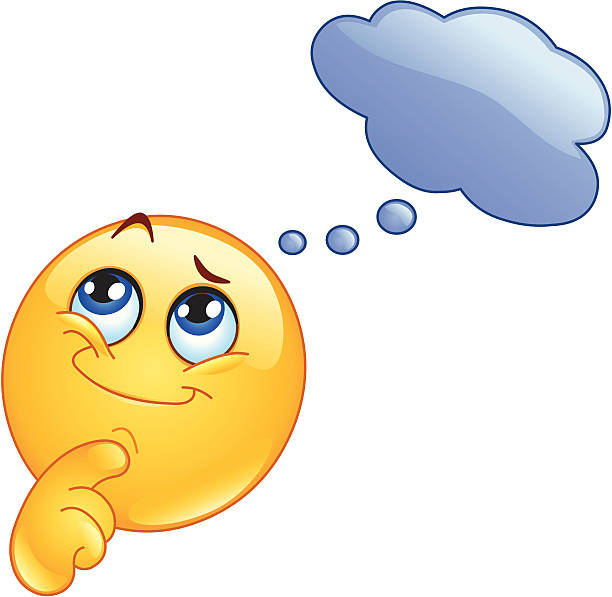

Johdanto
Julkaistu: 29. tammikuuta 2025
On hämmentävää huomata, että älykkäät ihmiset tekevät toisinaan päätöksiä, jotka vaikuttavat järjettömiltä. Tämä ilmiö herättää kysymyksen: miksi näin tapahtuu?
Neljä ajattelun ansaa
- Yliluottamus omaan kykyyn: Älykkäät ihmiset saattavat yliarvioida kykynsä ja aliarvioida haasteet.
- Vahvistusharha: He etsivät tietoa, joka tukee heidän ennakkokäsityksiään, ja sivuuttavat vastakkaiset näkemykset.
- Liiallinen analysointi: Yli-analysointi voi johtaa päätöksenteon halvaantumiseen tai virheellisiin johtopäätöksiin.
- Ryhmäharha: Ryhmäajattelu voi estää kriittisen ajattelun ja johtaa huonoihin päätöksiin.
"Jopa kaikkein terävimmät mielet voivat tehdä virheitä, jos he eivät ole tietoisia näistä ajattelun ansoista."
Johtopäätös
Ymmärtämällä nämä ajattelun ansat voimme paremmin välttää niitä ja tehdä harkitumpia päätöksiä. Itsetuntemus ja kriittinen ajattelu ovat avainasemassa.